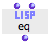
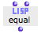

Comparison Predicates
There are many comparison predicates. These can apply to numbers, but also to symbols, characters, words, and so on.
Comparing Numbers
Comparing numbers is a widespread use of predicates in OM. Some algebraic predicates can be accessed via the |  |
Here is a non exhaustive presentation of OM algebraic predicates:
Predicate | Write | Test |
|---|---|---|
| OM= | A equal to B ? |
| OM/= | A different from B ? |
| OM<= | A inferior or equal to B ? |
| OM>= | A superior or equal to B ? |
| OM< | A inferior to B ? |
| OM> | A superior to B ? |
There are equivalent Lisp predicates to OM predicates. They can be used directly in OM type the predicate name without "OM", for instance "=", ">=", etc.
They can sometimes offer ineteresting possibilities, as they accept more than two arguments.
Comparison Predicates and Non Algebraic Objects
Lisp provides other predicates specifically dedicated to the comparison of other type of objects.
Some useful comparison predicates concern strings – or "words"–. They allow to test if two strings are equal, considering the characters case or not, precedence in alphabetical order, etc. Here are examples of avalable string-predicates :
|  |
More information about string comparison in Lisp can be found here.
Equality Predicates
Equality predicates test if two items are equal or not. They apply to a broader range of data than the algebraic predicates.
There are a number of equality predicates. Indeed, equality can encompass different concepts, depending on the type of object it is applied to.
For instance, the character "a" is a concept that can be represented by several different glyphs – A, a, a – which can be considered identical or not, depending on the predicate.
EQ is the the most specific predicate, and EQUALP the most general :
Returns "t" if | Examples | |
|---|---|---|
 |
This can have unpredictible results when testing numbers, for instance, since the underlying language may make internal copies of the numbers with same values. Two objects with the same reference are eq. | eq 'A 'A -> t eq 'A 'a -> t eq "A" "A" -> nil eq '(A B C) '(A B C) -> nil eq 2 2/1 -> t eq 2 2 -> t eq 2.5 2.5 -> nil |
Returns "t" if | Examples | |
|
| eql 2.0 2.0 -> t eql 2.0 2 -> nil |
Returns "t" if | Examples | |
 |
| equal (A (b) C) (a (B) c) -> t equal "A" "A" -> t equal "A" "a" ->nil equal 2.5 2.5 ->t |
Returns "t" if | Examples | |
|
| equalp 2 2/1 -> t equalp 2.5 2.5 -> t equalp 2 2.0 -> t equalp "A" "a" -> t |
Equality predicates are Lisp functions. They may not be in the OM menus but can be added by typing their name directly in a patch editor.
More information about equality predicates in Common Lisp here.
As shown above, general equality predicates offer more specific options in the evaluation of equality between numbers. They consider the value of numbers, but also their type (integer, float, ratio, etc.) and the internal Lisp object they refer to.
Many Lisp and OM functions need a predicate to operate. Some functions that perform operations upon lists, for instance, have a default equality predicate used for identifying similar items.
This predicate can be redefined to modify the behaviour of the function : a comparison predicate or a lambda function can be used for rejecting a given type of numbers, an so on.